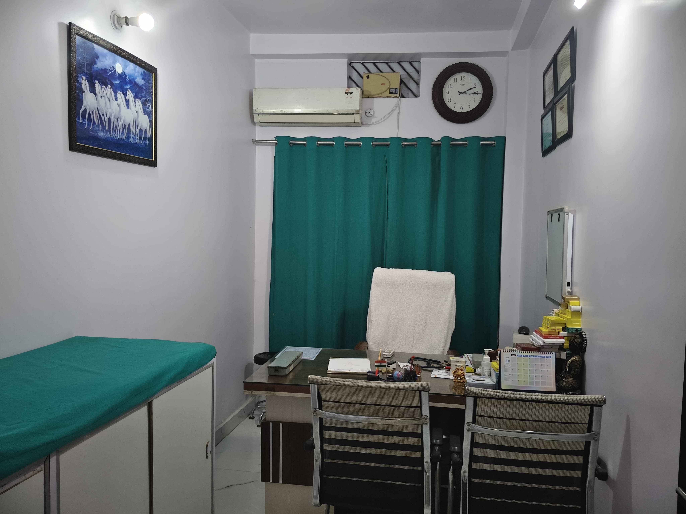
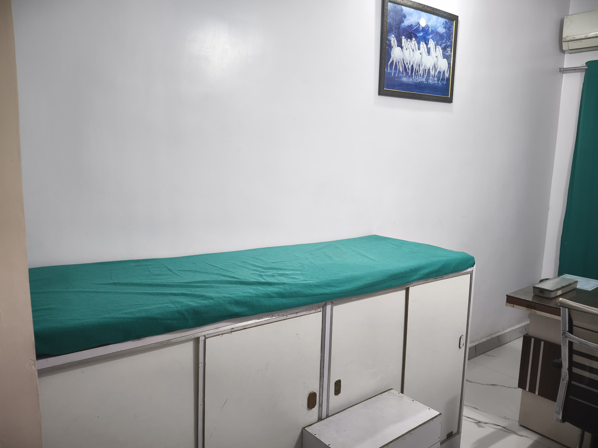
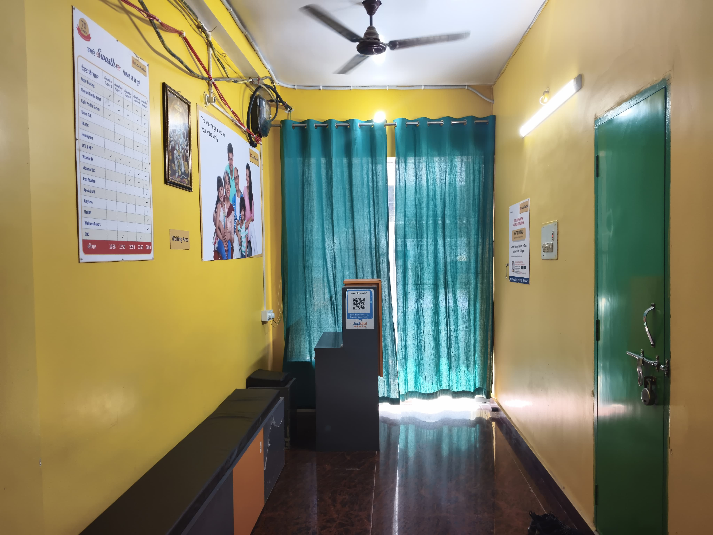
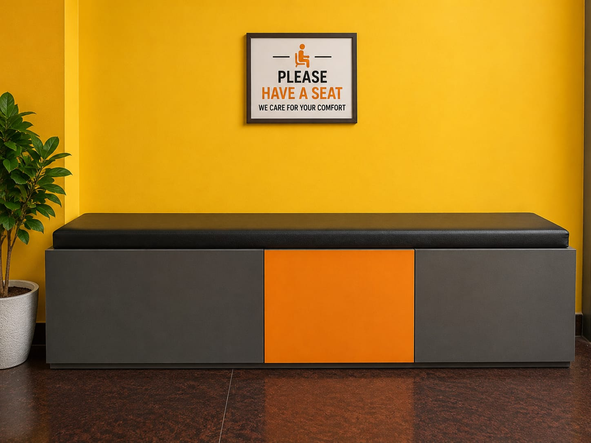
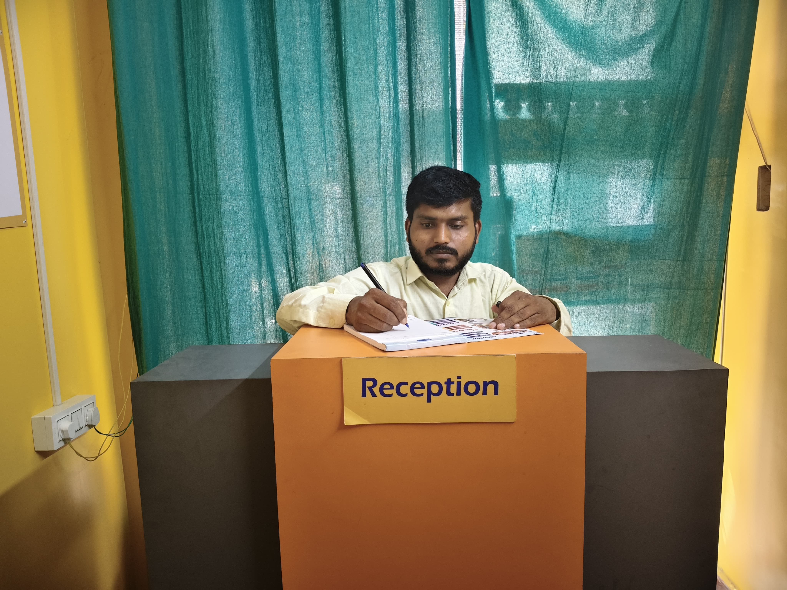

Unhurried consultation
Time to describe your concern fully, with questions welcomed and answered in plain language.
General Physician in Patna
See the doctor for fever, diabetes, blood pressure, thyroid, stomach problems and routine check-ups. You get clear advice, simple explanations and the right treatment — at the clinic near Patna College on Annie Besant Road.

Care Areas
Focused consultation, clear explanations and practical follow-up plans for everyday concerns and long-term conditions.
Assessment for fever, cold, cough, throat pain, seasonal illness, body ache and infection symptoms.
Learn moreBlood sugar log review, HbA1c discussion, medication planning and lifestyle guidance.
Learn moreBP review, medicine adjustment discussion, heart-risk counselling and home monitoring advice.
Learn moreThyroid report interpretation, weight concerns, fatigue evaluation and long-term follow-up.
Learn moreCare for acidity, gastritis, constipation, loose motions, appetite changes and abdominal discomfort.
Learn moreAnnual checkup planning, lab review, vaccination guidance and risk-reduction counselling.
Learn moreMedication review, diabetes/BP follow-up, fall-risk discussion and family-centred care.
Learn moreClear explanation of blood tests, prescriptions, specialist notes, warning signs and next steps.
Learn more
The Doctor
Dr Ajit Kishor is a general physician and PMCH-trained MD in Patna, who also serves as a Senior Resident at Patna Medical College & Hospital (PMCH). He focuses on first-contact medical care, chronic disease follow-up and preventive health. Every consultation is unhurried — concerns are understood, options are explained in plain language, and you leave with a clear, practical plan.
The Experience
What you can expect from every visit to the clinic.
Time to describe your concern fully, with questions welcomed and answered in plain language.
Medicines, dosages, warning signs and the next review date — explained so nothing is left unclear.
Long-term follow-up for diabetes, BP and thyroid, with your history kept in view each visit.
Tests only when needed, clear timelines, and a follow-up plan you can actually keep to.
Clinic Gallery
A look inside Dr Ajit Kishor's clinic on Annie Besant Road, Patna.





In Patients' Words
“Dr Kishor explains everything patiently and never rushes. My father's blood pressure and sugar are finally well managed.”
“Clean clinic, short wait and a doctor who actually listens. He reviewed all my old reports before prescribing anything.”
“Took my mother for a thyroid follow-up. Simple, clear and professional — every doubt was answered. Highly recommend.”
Appointment
Share your details and preferred time. The clinic team will confirm your slot by phone or WhatsApp.
For in-clinic consultation. Please confirm current payment options before visiting.
Visit the Clinic
The clinic is at Monika Niwaas, opposite Patna College, near Razza High School on Annie Besant Road, Patna 800004, Bihar.
The clinic is a short ride from most central and eastern Patna localities. Patients regularly visit Dr Ajit Kishor from these areas within 5–8 km of Annie Besant Road and Ashok Rajpath:
Coming from further away? Patients from anywhere in Patna and nearby districts are welcome — book a slot or call the clinic before travelling.
Questions
Quick answers on location, appointments, consultation fee and preparation.
Monika Niwaas, opposite Patna College, near Razza High School, Annie Besant Road, Patna 800004, Bihar.
The clinic is on Annie Besant Road near Ashok Rajpath. Patients visit from across Patna, especially areas within 5–8 km — Patna University, NIT Patna, Mahendru, Gulzarbagh, Patna City (Chowk), Patna Sahib, PMCH, Gandhi Maidan, Exhibition Road, Kadamkuan, Rajendra Nagar, Kumhrar, Kankarbagh and Patna Junction.
Fever, cough, infections, diabetes, BP, thyroid concerns, digestive issues, checkups, medication review and report interpretation.
Appointments are recommended for shorter waiting time. Walk-ins are accepted when slots are available.
The listed consultation fee is ₹300. Please confirm the current fee and payment options before visiting.
Carry a photo ID, current medicines, previous prescriptions, recent lab reports and home readings for diabetes or blood pressure if available.
This website and appointment form are not for emergencies. For severe symptoms, go to the nearest emergency department immediately.
Contact
Monika Niwaas, opposite Patna College, near Razza High School, Annie Besant Road, Patna 800004, Bihar.